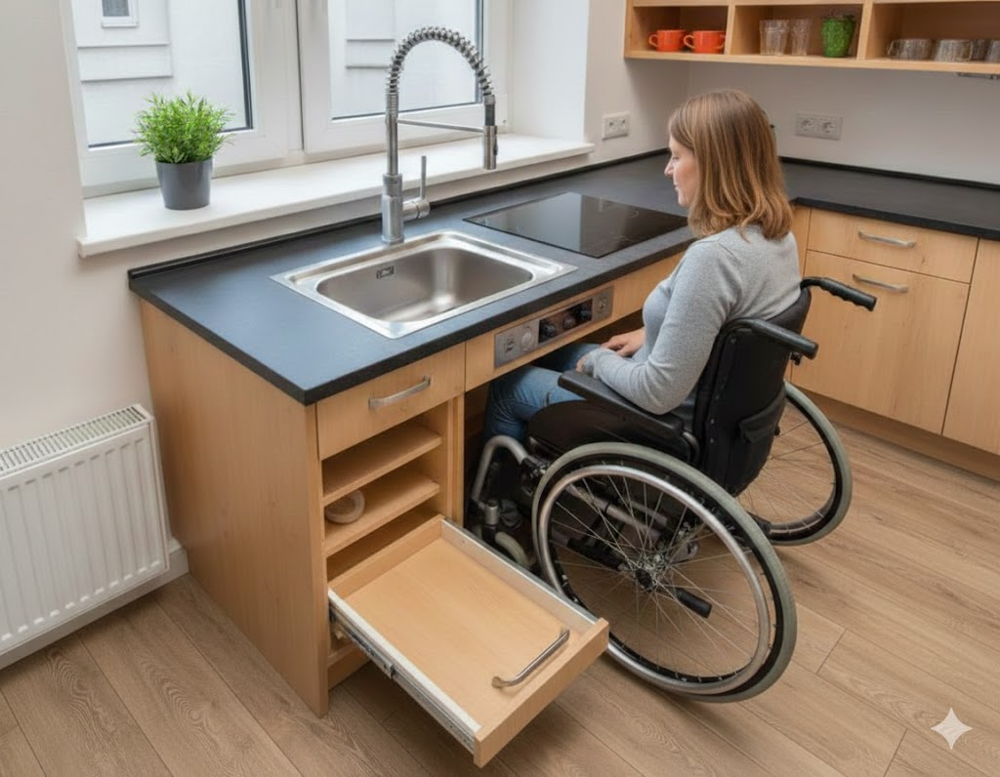
Design Universal Estas imagens são excelentes exemplos de Design Universal aplicado a um espaço habitacional, onde o planeamento funcional serve tanto para pessoas com mobilidade reduzida quanto para pessoas em pé.
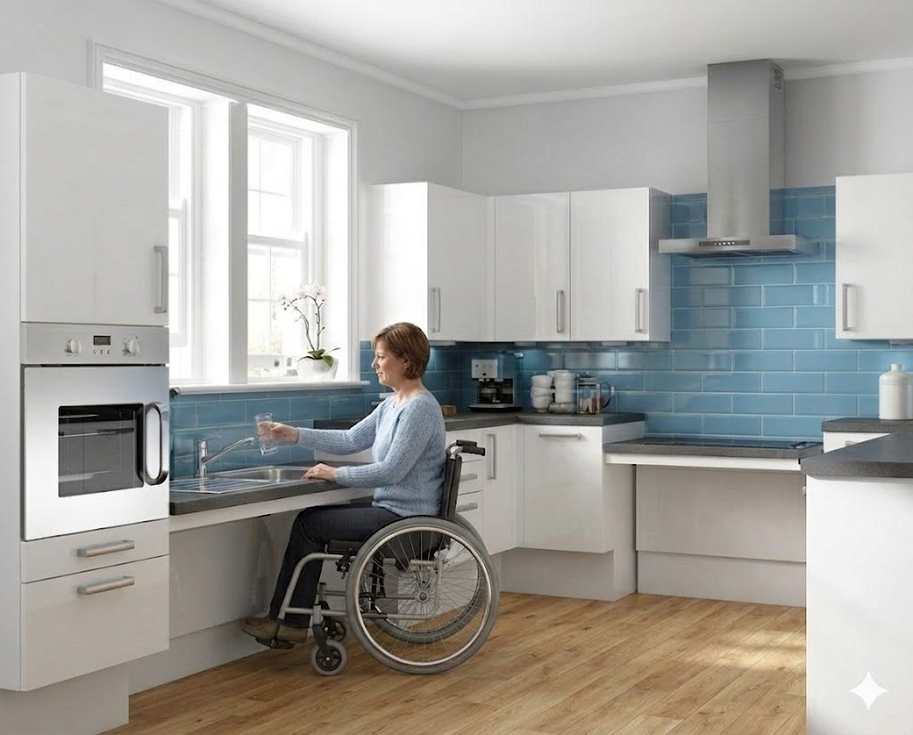
Acessibilidade Integrada Aqui está a imagem da cozinha acessível com uma pessoa numa cadeira de rodas integrada de forma natural e funcional no recorte sob o lava-loiça. Todos os outros elementos da cozinha, incluindo o backsplash azul intermédio e os eletrodomésticos, foram mantidos.
Aqui estão os principais elementos de acessibilidade visíveis:
Bancada com Vão Livre
A ilha central e o lava-loiça possuem um espaço aberto por baixo, permitindo que a pessoa em cadeira de rodas encaixe as pernas e se aproxime totalmente da superfície de trabalho.
Fornos em Altura Acessível
Os fornos estão instalados numa torre a uma altura média, facilitando o alcance e a visualização, tanto para quem está sentado quanto para quem está de pé, sem a necessidade de se curvar excessivamente.
Gavetões e Armários Deslizantes
O uso de sistemas de extração total facilita o acesso a itens guardados no fundo, eliminando a necessidade de "mergulhar" dentro de armários profundos.
Contraste Cromático
O uso de preto e branco (ou outras paletas contrastantes) não é apenas estético; o alto contraste ajuda pessoas com baixa visão a identificar limites de superfícies, bordas e puxadores.
Iluminação Direcionada
Os pontos de luz no teto garantem que as áreas de trabalho (lava-loiça, fogão e bancada) estejam bem iluminadas, o que é crucial para a segurança.
Projetos como este mostram que a acessibilidade pode ser integrada de forma moderna e elegante, sem parecer um ambiente hospitalar.
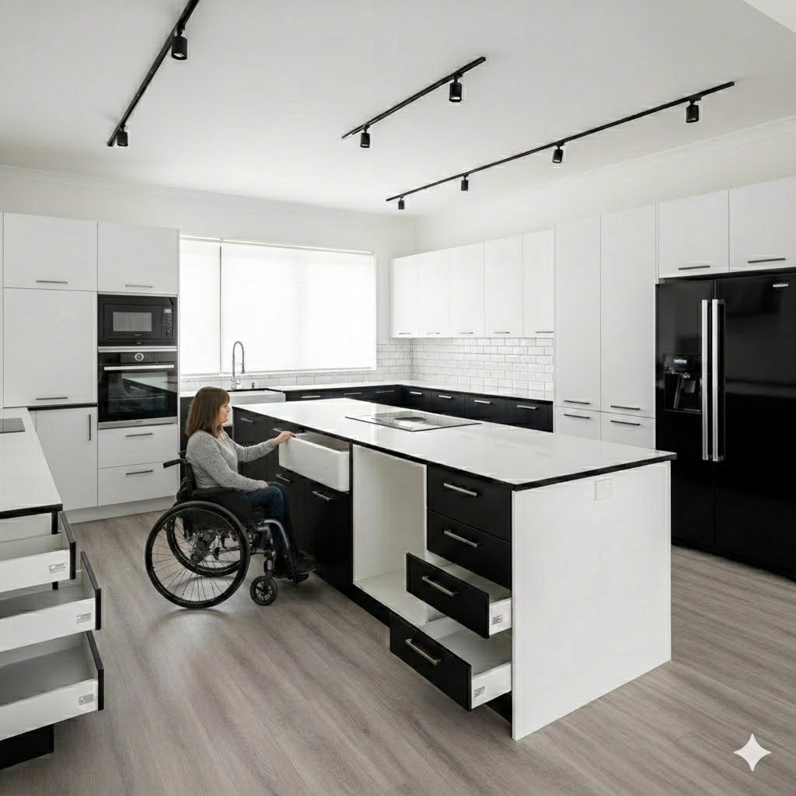
A Ergonomia da Liberdade
"A decoração inclusiva começa no planeamento do vazio. Uma casa bem desenhada é aquela que permite o movimento sem esforço, onde a estética nunca compromete a manobra."
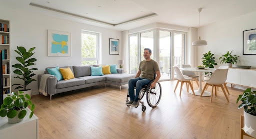
A paleta vibrante de Turquesa e Amarelo combinada com madeiras claras transparece frescura, serenidade e otimismo, enquanto a mesa de apoio com pé central (tulipa) liberta perfeitamente a base para aproximação de rodízios.

Toda a arquitetura é baseada numa harmonia de espaços "Barrier-Free", fluindo organicamente sem quaisquer ressaltos até ao limite do duche.
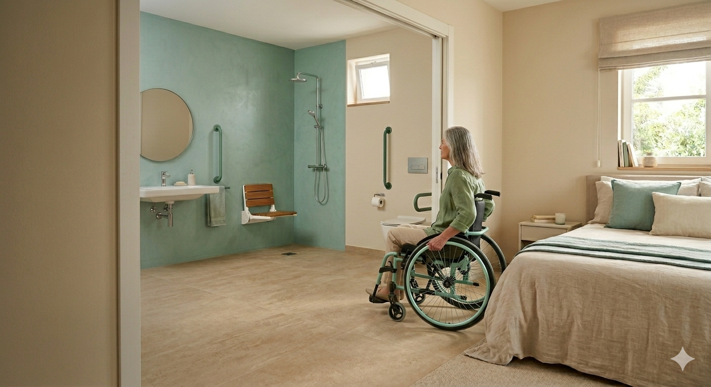
É verdadeiramente o fim do estigma "sanitário hospitalar": corrimões utilitários disfarçam-se requintadamente sob uma finalização moderna (Preto Mate).
O segredo máximo reside no planeamento dimensional. Este diâmetro livre de 1,50m é a chave técnica normativa para assegurar que um andarilho rodopiante inverta totalmente o seu sentido natural e sem stress de impacto.
Portas amplas abrem caminho até nas residências pré-reabilitadas. Definir uma métrica padrão de vãos com pelo menos 0,80m úteis em todas as esquadrias convida sem exceção a transições ininterruptas e independentes.
Guias de Materiais
"Ao unir inteligência funcional e materialidade segura, o espaço permanece invisivelmente adaptado e deslumbrantemente intemporal."
Paleta Sensorial: "Soft Elegance"
Texturas e Superfícies
-
Madeiras Claras e Translúcidas: Uso de vinil SPC Carvalho claro; possui toque cálido térmico contra os pés e assegura segurança sem roubar a suavidade visual da divisão. -
Nuances Cerâmicas Mate: Revestimentos nas cores areia, nude e blush criam um respiro visual apaziguante, reduzindo o brilho ofuscante e evocando dias de spa relaxantes.
Finalizações Tácteis
-
Acabamentos Ouro Escovado: Substituímos o inox frio e o preto pesado pelo requinte do Ouro Escovado. Garante aderência (menos escorregadio) mas o efeito visual é de uma joia decorativa, e não de uma barra de apoio clínica. -
Monocomandos Esculturais: Torneiras esguias e alongadas com sensor ou alavanca sensível fundem acessibilidade e beleza. O design liberta as mãos e adorna a bancada com traços femininos.
| Categoria | Adaptação Essencial | Protetividade Associada |
|---|---|---|
| Zona de Banho | Base Extraplana ("Walk-in") e Banco fixo anatómico | Remove transições de degrau e suporta fisicamente ciclos demorados de imersão sem instabilidade. |
| Ciclagem Sanitária | Bacia Sanitária majorada (45-50cm) e Corrimão de aba | Impede stress na rotação patelar dos joelhos aquando manobras de sentar e levantar. |
| Sensoriais e Segurança | Termostáticas Anti-Escalão e Sanca LED basal perimetral | Assegura o trânsito visual escurecido sem embates, bloqueando golpes térmicos hídricos súbitos e escaldões. |
| Camas | Cama articulada eletricamente regulável em altura e tensão, forrada para descompressão tegumentar rotativa. |
| Móveis Auxiliares | Bancadas de cabeceira em flutuação (suspensas) com bordão orgânico longo para encaixe ininterrupto inferior. |
| Rouparia | Varão de alavanca basculante pantográfico montado de forma a puxar o cabide para o perímetro sentado. |
| Tecnologia Smart | Comandos de áudio ativados domoticamente sobre persianas mecânicas pesadas; Teleassistência ou botão pânico. |
| Alocação Estóica | Reposição total de peças e tomadas ativas entre a matriz ergonómica de 40cm e os 120cm de altura para não fletir. |
| Zonamento | Fixação rigorosa com cantoneiras, remoção de rodapés salientes e poltronas motorizadas basculantes de força reativa auxiliar (Power Lift). |
Perguntas Frequentes
O design inclusivo desvaloriza e prejudica comercialmente o imóvel?
Pelo contrário. O Universal Design (subordinado à filosofia "Aging in Place") repete globalmente o panorama luxuoso da arquitetura moderna. Espaços amplos, duches walk-in e automação são a verdadeira quintessência da habitação de alta performance, aumentando exponencialmente a valorização imobiliária para qualquer comprador futuro.
A adaptação irá obrigar inescapavelmente a um layout "Clínico e Hospitalar"?
Absolutamente não. Toda a diferença estagna na componente dos acabamentos. Atualmente, exímios fornecedores entregam barras de apoio e ferragens com designs minimalistas em encrostados de preto mate, bronzes robustos e ripados amadeirados. Integram-se de forma indistinguível na decoração sofisticada, parecendo meramente belíssimos porta-toalhas.
Que pertinência assume verdadeiramente a inserção da Domótica nas casas?
A casa "Smart" é a maior aliada da autonomia funcional e libertação. Poder controlar comodamente luzes estratificadas, estores pesados e climatização por sistemas vocais ou sensores automáticos de movimento retira toda a necessidade de interações físicas exaustivas e arriscadas para utilizadores com perda de flexibilidade.
Galeria de Inspiração
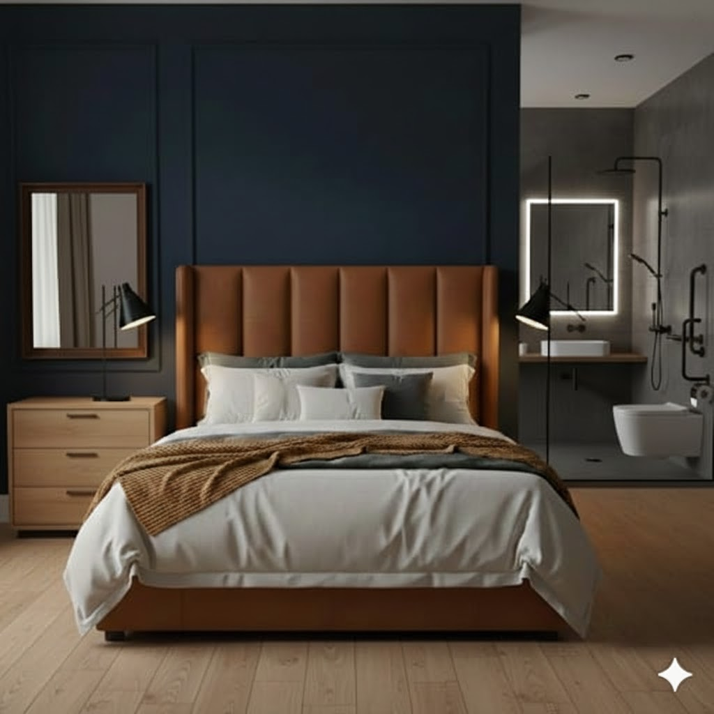
Roupeiros Adaptados
Varões basculantes articulados e prateleiras ajustáveis que permitem alcançar todas as peças de roupa confortavelmente a partir de uma posição sentada.
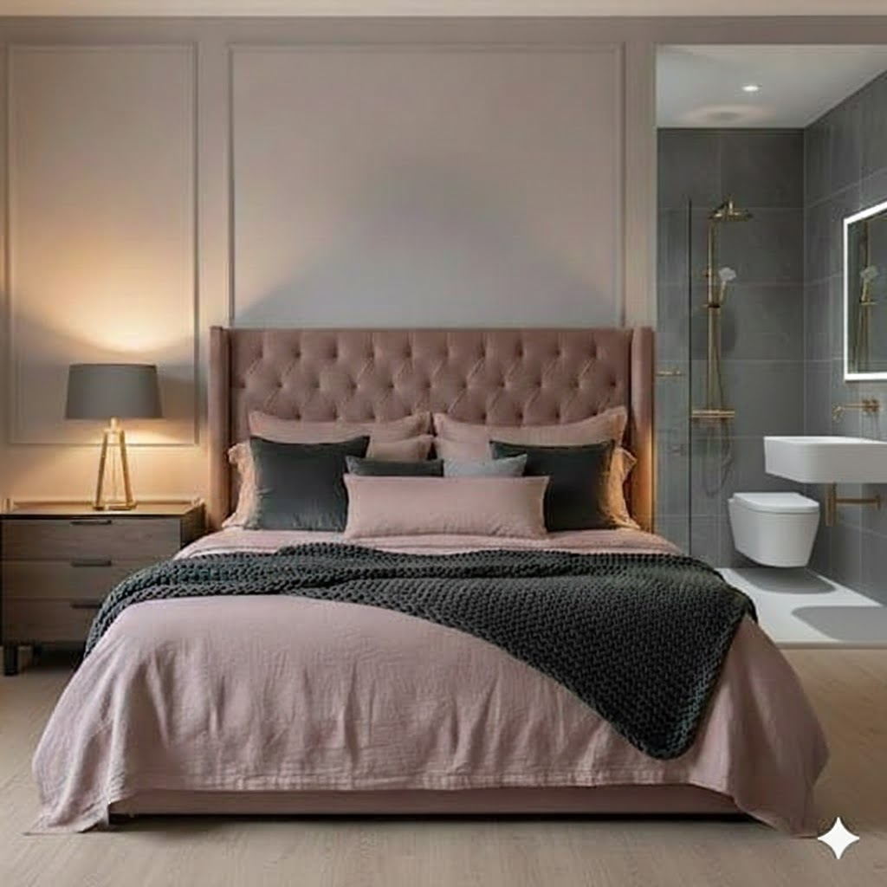
Pavimento Contínuo
A remoção de carpetes altas ou tapetes soltos no quarto reduz o esforço e a resistência à deslocação de cadeiras de rodas e garante total aderência e estabilidade a andarilhos.
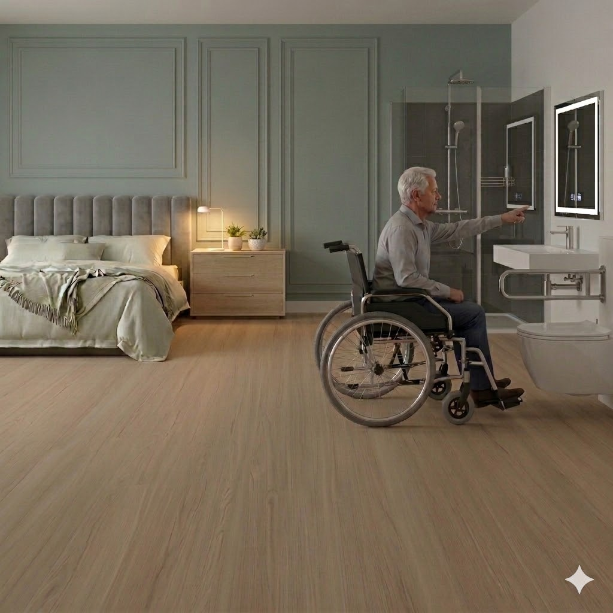
Espaço de Transferência
Deixar uma margem lateral livre de mobiliário de pelo menos 1,5 metros ao lado da cama é essencial para facilitar as manobras e movimentos de transferência.
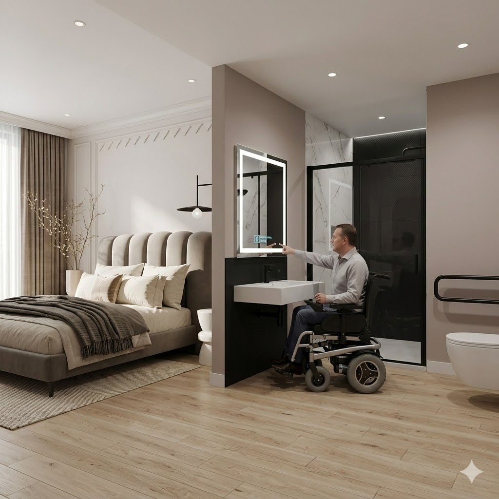
Colchão Iso-nivelado
Projetar a cama para que a superfície superior do colchão esteja à altura aproximada do assento da cadeira (45-50cm) retira qualquer esforço de inclinação nas entradas e saídas.
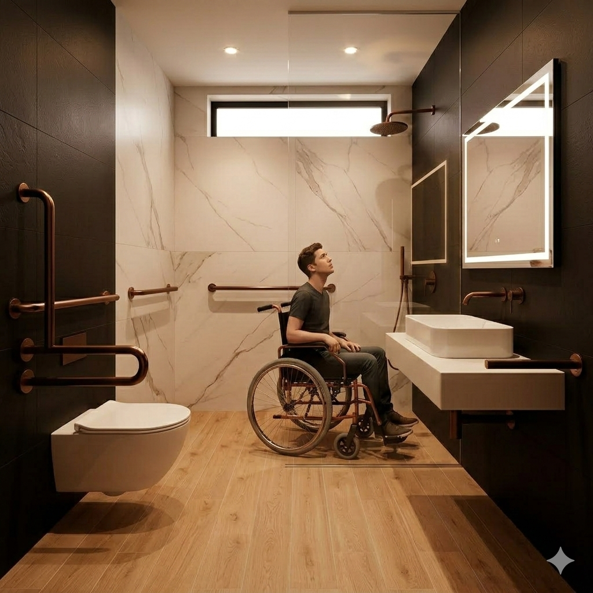
Controlos ao Alcance
Paredes integradas com comandos da iluminação, controlo de estores, ar condicionado e tomadas ajustados a alturas entre os 40cm a 100cm, oferecem ao utilizador total autonomia para gerir o seu espaço de repouso sem pedir auxílio.
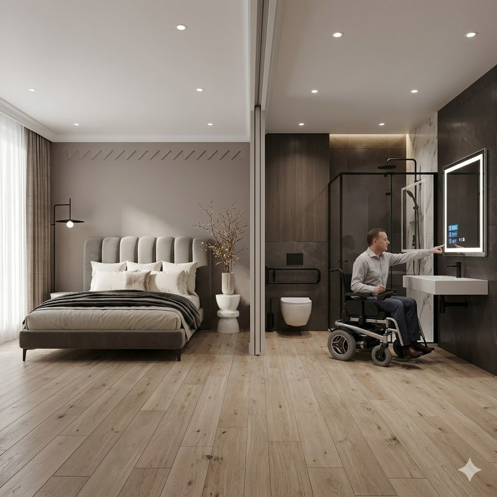
Mobiliário Orgânico e Fixo
A substituição de mesas de cabeceira pesadas de chão com recantos afiados por mesas suspensas (flutuantes) e bordas arredondadas liberta espaço inferior crucial para os apoios de pés da cadeira e reduz gravidade em impactos acidentais.

Sistemas Deslizantes
As portas de abrir normais criam constrangimentos enormes; adotar portas de correr, tanto na entrada do quarto como nos roupeiros, não rouba espaço de manobra à planta.

Iluminação de Presença
Instalar sancas LED em cor quente junto aos rodapés com ativação por sensor de movimento dá uma enorme segurança nas rondas noturnas sem encandear a pessoa recém-despertada.